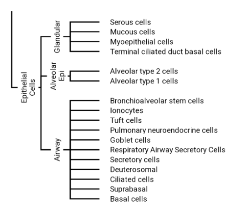

Dissecting cell types for anatomical structures - Lung Epithelial Cells (advanced)
This how-to walks through the process of extracting cell types for anatomical structures. It illustrates some of the challenges and nuances of ontology extraction in domains such as anatomy.
In theory it should be as simple as selecting a structure (e.g lung or the respiratory airway) and then selecting the cell types that are part of that structure. In practice, the way that ontologies are constructed renders results unsatisfactory:
The results are often incomplete because more ubiquitous cell types may not be axiomatized as part of a structure.
The results contain many redundancies because ontologies don’t populate things at consistent “levels”
For this example, we’ll work through lung epithelial cells.
An example of a biologist-friendly structure we might want to extract:
Initial exploration and motivation
As a motivating example, let’s look at goblet cell (CL:0000160) in CL. For now we’re going to use the command line, but later in this guide we’ll explore the python interface.
We’ll look at is-a and part-of ancestors of this cell type
[1]:
!runoak -i sqlite:obo:cl viz -p i,p "goblet cell" -o output/goblet-cell.png

What might be surprising to people not familiar with ontologies is the generic placement.
Initial setup
We’ll require some core OAK libraries, as well as pandas
[2]:
from oaklib import get_adapter
from oaklib.query import subclass_of, descendant_of, non_redundant, gap_fill
from oaklib.query import ancestor_of
from oaklib.datamodels.vocabulary import HAS_PART, PART_OF, IS_A
[3]:
import pandas as pd
Connect to the Cell Ontology
We’ll use the sqlite version of CL:
[4]:
cl = get_adapter("sqlite:obo:cl")
[4]:
We will also define some helper functions to convert queries to sets and dataframes
[5]:
def q2set(q):
"""execute query and return as set."""
return set(q.execute(cl, labels=True))
def q2df(q):
"""execute query and return as dataframe."""
return pd.DataFrame(q.execute(cl, labels=True))
Setting up queries
Here we will make use of query objects to represent the queries we want to execute. This allows us to build up complex queries in a more readable way.
We will start by defining a query for epithelial cells
[6]:
epithelial_q = subclass_of("epithelial cell")
We can look at the results:
[7]:
q2df(epithelial_q)
[7]:
| 0 | 1 | |
|---|---|---|
| 0 | CL:0000059 | ameloblast |
| 1 | CL:0000060 | odontoblast |
| 2 | CL:0000065 | ependymal cell |
| 3 | CL:0000066 | epithelial cell |
| 4 | CL:0000067 | ciliated epithelial cell |
| ... | ... | ... |
| 722 | CL:4033037 | mucus secreting cell of tracheobronchial tree ... |
| 723 | CL:4033044 | deuterosomal cell |
| 724 | CL:4033048 | respiratory suprabasal cell |
| 725 | CL:4033049 | taste receptor cell of tongue |
| 726 | CL:4040003 | fetal pre-type II pneumocyte |
727 rows × 2 columns
There are a lot of epithelial cells in the ontology, at different levels of cell type specificity, as well as different levels of anatomical specificity.
We’re interested in lung epithelial cells, so let’s define a query to get airway parts - we can intersect this with the epithelial cell query to get lung epithelial cells later:
[8]:
airway_q = descendant_of("respiratory airway", predicates=[PART_OF])
q2df(airway_q)
[8]:
| 0 | 1 | |
|---|---|---|
| 0 | CL:0000082 | epithelial cell of lung |
| 1 | CL:0000158 | club cell |
| 2 | CL:0000307 | tracheal epithelial cell |
| 3 | CL:0000322 | pneumocyte |
| 4 | CL:0000583 | alveolar macrophage |
| ... | ... | ... |
| 270 | UBERON:8600002 | mucosa of lobular bronchiole |
| 271 | UBERON:8600003 | smooth muscle tissue of lobular bronchiole |
| 272 | UBERON:8600010 | bronchial submucosal gland ciliated duct |
| 273 | UBERON:8600011 | tracheal submucosal gland ciliated duct |
| 274 | UBERON:8600017 | bronchopulmonary segment |
275 rows × 2 columns
[9]:
## Boolean queries - AND
Our result includes immune cells and many cell types, so next we will intersect out queries to get lung epithelial cells.
Note we could do this simply by using python to intersect our two existing results, but we will instead do this by making an AND (intersection) query. This is a good practice to get into, as it will allow us to build up more complex queries later.
[10]:
aec_q = epithelial_q & airway_q
aec = q2df(aec_q)
aec
[10]:
| 0 | 1 | |
|---|---|---|
| 0 | CL:0000082 | epithelial cell of lung |
| 1 | CL:0000158 | club cell |
| 2 | CL:0000307 | tracheal epithelial cell |
| 3 | CL:0000322 | pneumocyte |
| 4 | CL:0000853 | olfactory epithelial supporting cell |
| ... | ... | ... |
| 61 | CL:4033023 | airway submucosal gland collecting duct epithe... |
| 62 | CL:4033037 | mucus secreting cell of tracheobronchial tree ... |
| 63 | CL:4033044 | deuterosomal cell |
| 64 | CL:4033048 | respiratory suprabasal cell |
| 65 | CL:4040003 | fetal pre-type II pneumocyte |
66 rows × 2 columns
Non-redundant sets
Here we have fewer rows, but our results still have a lot of redundancy. For example, we have both type I and II pneumocytes, as well as the grouping class pneumocyte.
We will filter the results for redundancy (i.e leaf nodes). As we will see later this is not always the best strategy, as sometimes leaf nodes can be too specific, but it’s a good start for exploration
[11]:
nr_aec_q = non_redundant(aec_q, predicates=[IS_A])
nr_aec = q2df(nr_aec_q)
nr_aec
[11]:
| 0 | 1 | |
|---|---|---|
| 0 | CL:0000158 | club cell |
| 1 | CL:0000853 | olfactory epithelial supporting cell |
| 2 | CL:0002062 | type I pneumocyte |
| 3 | CL:0002063 | type II pneumocyte |
| 4 | CL:0002171 | globose cell of olfactory epithelium |
| 5 | CL:0002184 | basal proper cell of olfactory epithelium |
| 6 | CL:0002205 | brush cell of lobular bronchiole |
| 7 | CL:0002206 | brush cell of terminal bronchiole |
| 8 | CL:0002207 | brush cell of trachea |
| 9 | CL:0002209 | intermediate epitheliocyte |
| 10 | CL:0002330 | undifferentiated cell of bronchus epithelium |
| 11 | CL:0002332 | ciliated cell of the bronchus |
| 12 | CL:0002480 | nasal mucosa goblet cell |
| 13 | CL:0002638 | bronchioalveolar stem cell |
| 14 | CL:0008026 | open tracheal system tracheocyte |
| 15 | CL:0017000 | pulmonary ionocyte |
| 16 | CL:1000329 | tracheal goblet cell |
| 17 | CL:1000348 | basal cell of epithelium of trachea |
| 18 | CL:1000349 | basal cell of epithelium of bronchus |
| 19 | CL:1000352 | basal cell of epithelium of lobular bronchiole |
| 20 | CL:1000377 | dense-core granulated cell of epithelium of tr... |
| 21 | CL:1000492 | mesothelial cell of parietal pleura |
| 22 | CL:1000493 | mesothelial cell of visceral pleura |
| 23 | CL:1001573 | nasopharyngeal epithelial cell |
| 24 | CL:2000094 | nasal cavity respiratory epithelium epithelial... |
| 25 | CL:4028002 | alveolar capillary type 1 endothelial cell |
| 26 | CL:4028003 | alveolar capillary type 2 endothelial cell |
| 27 | CL:4030023 | respiratory hillock cell |
| 28 | CL:4033003 | myoepithelial cell of bronchus submucosal gland |
| 29 | CL:4033007 | brush cell of epithelium of lobar bronchus |
| 30 | CL:4033009 | goblet cell of epithelium of lobar bronchus |
| 31 | CL:4033010 | neuroendocrine cell of epithelium of lobar bro... |
| 32 | CL:4033020 | mucus secreting cell of trachea gland |
| 33 | CL:4033021 | myoepithelial cell of trachea gland |
| 34 | CL:4033022 | mucus secreting cell of bronchus submucosal gland |
| 35 | CL:4033023 | airway submucosal gland collecting duct epithe... |
| 36 | CL:4033044 | deuterosomal cell |
| 37 | CL:4033048 | respiratory suprabasal cell |
| 38 | CL:4040003 | fetal pre-type II pneumocyte |
[12]:
lung_grouping_subset = ["pneumocyte", "lower respiratory tract", "bronchiole", "respiratory airway", "bronchus", "UBERON:0003126", "alveolus of lung", "upper respiratory tract"]
nr_aec_subset_q = gap_fill(nr_aec_q.execute(cl) + lung_grouping_subset, predicates=[IS_A, PART_OF])
graph = cl.relationships_to_graph(nr_aec_subset_q.execute(cl))
[13]:
from oaklib.utilities.obograph_utils import graph_to_tree_display
print(graph_to_tree_display(graph))
* [] UBERON:0001005 ! respiratory airway
* [p] UBERON:0001558 ! lower respiratory tract
* [p] UBERON:0003126 ! trachea
* [p] CL:4033021 ! myoepithelial cell of trachea gland
* [p] CL:4033020 ! mucus secreting cell of trachea gland
* [p] CL:1000377 ! dense-core granulated cell of epithelium of trachea
* [p] CL:1000348 ! basal cell of epithelium of trachea
* [p] CL:1000329 ! tracheal goblet cell
* [p] CL:0002207 ! brush cell of trachea
* [p] UBERON:0002299 ! alveolus of lung
* [p] CL:4028003 ! alveolar capillary type 2 endothelial cell
* [p] CL:4028002 ! alveolar capillary type 1 endothelial cell
* [p] CL:0000322 ! pneumocyte
* [i] CL:4040003 ! fetal pre-type II pneumocyte
* [i] CL:0002063 ! type II pneumocyte
* [i] CL:0002062 ! type I pneumocyte
* [p] UBERON:0002186 ! bronchiole
* [p] CL:1000352 ! basal cell of epithelium of lobular bronchiole
* [p] CL:0002638 ! bronchioalveolar stem cell
* [p] CL:0002206 ! brush cell of terminal bronchiole
* [p] CL:0002205 ! brush cell of lobular bronchiole
* [p] UBERON:0002185 ! bronchus
* [p] CL:4033022 ! mucus secreting cell of bronchus submucosal gland
* [p] CL:4033010 ! neuroendocrine cell of epithelium of lobar bronchus
* [p] CL:4033009 ! goblet cell of epithelium of lobar bronchus
* [p] CL:4033007 ! brush cell of epithelium of lobar bronchus
* [p] CL:4033003 ! myoepithelial cell of bronchus submucosal gland
* [p] CL:1000349 ! basal cell of epithelium of bronchus
* [p] CL:0002332 ! ciliated cell of the bronchus
* [p] CL:0002330 ! undifferentiated cell of bronchus epithelium
* [p] CL:1000493 ! mesothelial cell of visceral pleura
* [p] CL:1000492 ! mesothelial cell of parietal pleura
* [p] CL:0017000 ! pulmonary ionocyte
* [p] CL:0002209 ! intermediate epitheliocyte
* [p] CL:0000158 ! club cell
* [p] UBERON:0001557 ! upper respiratory tract
* [p] CL:2000094 ! nasal cavity respiratory epithelium epithelial cell of viscerocranial mucosa
* [p] CL:1001573 ! nasopharyngeal epithelial cell
* [p] CL:0002480 ! nasal mucosa goblet cell
* [p] CL:0002184 ! basal proper cell of olfactory epithelium
* [p] CL:0002171 ! globose cell of olfactory epithelium
* [p] CL:0000853 ! olfactory epithelial supporting cell
* [p] CL:4033048 ! respiratory suprabasal cell
* [p] CL:4033044 ! deuterosomal cell
* [p] CL:4033023 ! airway submucosal gland collecting duct epithelial cell
* [p] CL:4030023 ! respiratory hillock cell
* [p] CL:0008026 ! open tracheal system tracheocyte
Dissecting anatomical structures
TODO: complete this section. It may be the case that the current structure of Uberon is not best placed to demonstrate dissection queries for the respiratory system.
[14]:
dissection_q = ancestor_of(airway_q, predicates=[HAS_PART]) & epithelial_q
dissection = q2df(dissection_q)
dissection
[14]:
| 0 | 1 | |
|---|---|---|
| 0 | CL:0000066 | epithelial cell |
| 1 | CL:0000067 | ciliated epithelial cell |
| 2 | CL:0000071 | blood vessel endothelial cell |
| 3 | CL:0000075 | columnar/cuboidal epithelial cell |
| 4 | CL:0000076 | squamous epithelial cell |
| ... | ... | ... |
| 82 | CL:4033023 | airway submucosal gland collecting duct epithe... |
| 83 | CL:4033037 | mucus secreting cell of tracheobronchial tree ... |
| 84 | CL:4033044 | deuterosomal cell |
| 85 | CL:4033048 | respiratory suprabasal cell |
| 86 | CL:4040003 | fetal pre-type II pneumocyte |
87 rows × 2 columns
[15]:
from matplotlib_venn import venn2
import matplotlib.pyplot as plt
[16]:
venn2([q2set(dissection_q), q2set(aec_q)], set_labels=["Dissection", "AEC"])
[16]:
<matplotlib_venn._common.VennDiagram at 0x7fa1f1306fa0>
[17]:
plt.figure(figsize=(24, 16))
venn_axis = venn2([q2set(dissection_q), q2set(aec_q)], set_labels=["Dissection", "AEC"])
only_set1 = q2set(dissection_q) - q2set(aec_q)
only_set2 = q2set(aec_q) - q2set(dissection_q)
common_set = q2set(dissection_q) & q2set(aec_q)
venn_axis.get_label_by_id('10').set_text('\n'.join(map(str, only_set1)))
venn_axis.get_label_by_id('01').set_text('\n'.join(map(str, only_set2)))
venn_axis.get_label_by_id('11').set_text('\n'.join(map(str, common_set)))
# Adjust position and size of the labels (optional)
for id in ('10', '01', '11'):
label = venn_axis.get_label_by_id(id)
if label:
label.set_fontsize(8)
[33]:
def dissection_venn(struct: str):
plt.figure(figsize=(24, 16))
my_dissection_q = ancestor_of(descendant_of(struct, predicates=[PART_OF]), predicates=[HAS_PART]) & epithelial_q
venn_axis = venn2([q2set(my_dissection_q), q2set(aec_q)], set_labels=["Dissection", "AEC"])
only_set1 = q2set(my_dissection_q) - q2set(aec_q)
only_set2 = q2set(aec_q) - q2set(my_dissection_q)
common_set = q2set(my_dissection_q) & q2set(aec_q)
venn_axis.get_label_by_id('10').set_text('\n'.join(map(str, only_set1)))
venn_axis.get_label_by_id('01').set_text('\n'.join(map(str, only_set2)))
venn_axis.get_label_by_id('11').set_text('\n'.join(map(str, common_set)))
# Adjust position and size of the labels (optional)
for id in ('10', '01', '11'):
label = venn_axis.get_label_by_id(id)
if label:
label.set_fontsize(8)
dissection_venn("bronchus")
[34]:
dissection_venn("trachea")
Roll ups
[18]:
from oaklib.utilities.axioms.logical_definition_utilities import roll_up_to_genus
aec_minimal = {roll_up_to_genus(t, cl, [PART_OF]) for t in aec_q.execute(cl)}
aec_minimal_df = pd.DataFrame((t, cl.label(t)) for t in aec_minimal)
aec_minimal_df
[18]:
| 0 | 1 | |
|---|---|---|
| 0 | CL:0002062 | type I pneumocyte |
| 1 | CL:4033044 | deuterosomal cell |
| 2 | CL:0000630 | supporting cell |
| 3 | CL:0000064 | ciliated cell |
| 4 | CL:0002145 | ciliated columnar cell of tracheobronchial tree |
| 5 | CL:1000441 | epithelial cell of viscerocranial mucosa |
| 6 | CL:0002638 | bronchioalveolar stem cell |
| 7 | CL:0002139 | endothelial cell of vascular tree |
| 8 | CL:0002184 | basal proper cell of olfactory epithelium |
| 9 | CL:4028003 | alveolar capillary type 2 endothelial cell |
| 10 | CL:0002329 | basal epithelial cell of tracheobronchial tree |
| 11 | CL:0002167 | olfactory epithelial cell |
| 12 | CL:0002076 | endo-epithelial cell |
| 13 | CL:0002066 | Feyrter cell |
| 14 | CL:0000076 | squamous epithelial cell |
| 15 | CL:4030024 | hillock cell |
| 16 | CL:0017000 | pulmonary ionocyte |
| 17 | CL:4040003 | fetal pre-type II pneumocyte |
| 18 | CL:0002171 | globose cell of olfactory epithelium |
| 19 | CL:0000160 | goblet cell |
| 20 | CL:4033023 | airway submucosal gland collecting duct epithe... |
| 21 | CL:4033048 | respiratory suprabasal cell |
| 22 | CL:0000066 | epithelial cell |
| 23 | CL:0000165 | neuroendocrine cell |
| 24 | CL:0000322 | pneumocyte |
| 25 | CL:0002633 | respiratory basal cell |
| 26 | CL:0002330 | undifferentiated cell of bronchus epithelium |
| 27 | CL:0002209 | intermediate epitheliocyte |
| 28 | CL:0002063 | type II pneumocyte |
| 29 | CL:0000319 | mucus secreting cell |
| 30 | CL:0002204 | brush cell |
| 31 | CL:4033037 | mucus secreting cell of tracheobronchial tree ... |
| 32 | CL:4028002 | alveolar capillary type 1 endothelial cell |
| 33 | CL:0000158 | club cell |
| 34 | CL:0000077 | mesothelial cell |
| 35 | CL:0000185 | myoepithelial cell |
[22]:
LOCS = ["lower respiratory tract", "upper respiratory tract", "trachea", "bronchus", "alveolus", "lung", "nose"]
by_loc = {loc: (subclass_of("epithelial cell") & descendant_of(loc, predicates=[PART_OF])).execute(cl) for loc in LOCS}
print(len(by_loc))
by_genus = {cell: subclass_of(cell).execute(cl) for cell in aec_minimal}
print(len(by_genus))
7
36
---------------------------------------------------------------------------
AttributeError Traceback (most recent call last)
Cell In[22], line 11
9 row = {}
10 for loc in LOCS:
---> 11 row[loc] = len(by_loc[loc].intersection(by_genus[cell]))
12 rows.append(row)
14 xp_df = pd.DataFrame(rows)
AttributeError: 'list' object has no attribute 'intersection'
[28]:
rows = []
for cell in aec_minimal:
row = {"id": cell, "label": cl.label(cell)}
for loc in LOCS:
num = len(set(by_loc[loc]).intersection(by_genus[cell]))
row[loc] = 1 if num > 0 else 0
rows.append(row)
xp_df = pd.DataFrame(rows)
xp_df
[28]:
| id | label | lower respiratory tract | upper respiratory tract | trachea | bronchus | alveolus | lung | nose | |
|---|---|---|---|---|---|---|---|---|---|
| 0 | CL:0002062 | type I pneumocyte | 1 | 0 | 0 | 0 | 1 | 1 | 0 |
| 1 | CL:4033044 | deuterosomal cell | 0 | 0 | 0 | 0 | 0 | 0 | 0 |
| 2 | CL:0000630 | supporting cell | 0 | 1 | 0 | 0 | 0 | 0 | 1 |
| 3 | CL:0000064 | ciliated cell | 1 | 0 | 0 | 1 | 0 | 0 | 0 |
| 4 | CL:0002145 | ciliated columnar cell of tracheobronchial tree | 1 | 0 | 0 | 1 | 0 | 0 | 0 |
| 5 | CL:1000441 | epithelial cell of viscerocranial mucosa | 0 | 1 | 0 | 0 | 0 | 0 | 1 |
| 6 | CL:0002638 | bronchioalveolar stem cell | 1 | 0 | 0 | 0 | 0 | 1 | 0 |
| 7 | CL:0002139 | endothelial cell of vascular tree | 1 | 0 | 0 | 0 | 1 | 1 | 0 |
| 8 | CL:0002184 | basal proper cell of olfactory epithelium | 0 | 1 | 0 | 0 | 0 | 0 | 1 |
| 9 | CL:4028003 | alveolar capillary type 2 endothelial cell | 1 | 0 | 0 | 0 | 1 | 1 | 0 |
| 10 | CL:0002329 | basal epithelial cell of tracheobronchial tree | 1 | 0 | 0 | 1 | 0 | 0 | 0 |
| 11 | CL:0002167 | olfactory epithelial cell | 0 | 1 | 0 | 0 | 0 | 0 | 1 |
| 12 | CL:0002076 | endo-epithelial cell | 1 | 1 | 1 | 1 | 0 | 1 | 0 |
| 13 | CL:0002066 | Feyrter cell | 1 | 0 | 1 | 0 | 0 | 0 | 0 |
| 14 | CL:0000076 | squamous epithelial cell | 1 | 0 | 0 | 0 | 1 | 1 | 0 |
| 15 | CL:4030024 | hillock cell | 0 | 0 | 0 | 0 | 0 | 0 | 0 |
| 16 | CL:0017000 | pulmonary ionocyte | 1 | 0 | 0 | 0 | 0 | 1 | 0 |
| 17 | CL:4040003 | fetal pre-type II pneumocyte | 1 | 0 | 0 | 0 | 1 | 1 | 0 |
| 18 | CL:0002171 | globose cell of olfactory epithelium | 0 | 1 | 0 | 0 | 0 | 0 | 1 |
| 19 | CL:0000160 | goblet cell | 1 | 1 | 1 | 1 | 0 | 1 | 1 |
| 20 | CL:4033023 | airway submucosal gland collecting duct epithe... | 0 | 0 | 0 | 0 | 0 | 0 | 0 |
| 21 | CL:4033048 | respiratory suprabasal cell | 0 | 0 | 0 | 0 | 0 | 0 | 0 |
| 22 | CL:0000066 | epithelial cell | 1 | 1 | 1 | 1 | 1 | 1 | 1 |
| 23 | CL:0000165 | neuroendocrine cell | 1 | 0 | 1 | 1 | 0 | 1 | 0 |
| 24 | CL:0000322 | pneumocyte | 1 | 0 | 0 | 0 | 1 | 1 | 0 |
| 25 | CL:0002633 | respiratory basal cell | 1 | 0 | 1 | 1 | 0 | 1 | 0 |
| 26 | CL:0002330 | undifferentiated cell of bronchus epithelium | 1 | 0 | 0 | 1 | 0 | 0 | 0 |
| 27 | CL:0002209 | intermediate epitheliocyte | 1 | 0 | 0 | 0 | 0 | 0 | 0 |
| 28 | CL:0002063 | type II pneumocyte | 1 | 0 | 0 | 0 | 1 | 1 | 0 |
| 29 | CL:0000319 | mucus secreting cell | 1 | 1 | 1 | 1 | 0 | 1 | 1 |
| 30 | CL:0002204 | brush cell | 1 | 0 | 1 | 1 | 0 | 1 | 0 |
| 31 | CL:4033037 | mucus secreting cell of tracheobronchial tree ... | 1 | 0 | 1 | 1 | 0 | 0 | 0 |
| 32 | CL:4028002 | alveolar capillary type 1 endothelial cell | 1 | 0 | 0 | 0 | 1 | 1 | 0 |
| 33 | CL:0000158 | club cell | 1 | 0 | 0 | 0 | 0 | 0 | 0 |
| 34 | CL:0000077 | mesothelial cell | 1 | 0 | 0 | 0 | 0 | 1 | 0 |
| 35 | CL:0000185 | myoepithelial cell | 1 | 0 | 1 | 1 | 1 | 0 | 0 |
[29]:
import pandas as pd
import seaborn as sns
import matplotlib.pyplot as plt
# Assuming df is your dataframe with 'id' and 'label' columns followed by columns of anatomical entities
# Set 'id' or 'label' as the index if it makes it easier to visualize
xp_df.set_index('label', inplace=True)
plt.figure(figsize=(10, 8))
sns.heatmap(xp_df.iloc[:, 1:], cmap='viridis', cbar=True, linewidths=.5)
plt.xlabel('Anatomical Entities')
plt.ylabel('Cell Types')
plt.title('Heatmap of Cell Types across Anatomical Entities')
plt.show()
[46]:
hp_by_loc = {}
for loc in LOCS:
hp_by_loc[loc] = set(ancestor_of(descendant_of(loc, predicates=[PART_OF]) - subclass_of("cell"), predicates=[HAS_PART]).execute(cl))
[47]:
rows = []
for cell in aec_minimal:
row = {"id": cell, "label": cl.label(cell)}
cells = set(subclass_of(cell).execute(cl))
for loc in LOCS:
num = len(cells.intersection(hp_by_loc[loc]))
row[loc] = 1 if num > 0 else 0
rows.append(row)
hp_df = pd.DataFrame(rows)
hp_df
[47]:
| id | label | lower respiratory tract | upper respiratory tract | trachea | bronchus | alveolus | lung | nose | |
|---|---|---|---|---|---|---|---|---|---|
| 0 | CL:0002062 | type I pneumocyte | 1 | 0 | 0 | 0 | 1 | 1 | 0 |
| 1 | CL:4033044 | deuterosomal cell | 0 | 0 | 0 | 0 | 0 | 0 | 0 |
| 2 | CL:0000630 | supporting cell | 1 | 1 | 0 | 0 | 1 | 1 | 1 |
| 3 | CL:0000064 | ciliated cell | 1 | 1 | 1 | 1 | 1 | 1 | 1 |
| 4 | CL:0002145 | ciliated columnar cell of tracheobronchial tree | 1 | 0 | 0 | 1 | 0 | 1 | 0 |
| 5 | CL:1000441 | epithelial cell of viscerocranial mucosa | 0 | 0 | 0 | 0 | 0 | 0 | 0 |
| 6 | CL:0002638 | bronchioalveolar stem cell | 0 | 0 | 0 | 0 | 0 | 0 | 0 |
| 7 | CL:0002139 | endothelial cell of vascular tree | 1 | 0 | 1 | 0 | 0 | 1 | 0 |
| 8 | CL:0002184 | basal proper cell of olfactory epithelium | 0 | 0 | 0 | 0 | 0 | 0 | 0 |
| 9 | CL:4028003 | alveolar capillary type 2 endothelial cell | 0 | 0 | 0 | 0 | 0 | 0 | 0 |
| 10 | CL:0002329 | basal epithelial cell of tracheobronchial tree | 1 | 0 | 0 | 1 | 0 | 1 | 0 |
| 11 | CL:0002167 | olfactory epithelial cell | 0 | 1 | 0 | 0 | 0 | 0 | 1 |
| 12 | CL:0002076 | endo-epithelial cell | 1 | 0 | 0 | 1 | 0 | 1 | 0 |
| 13 | CL:0002066 | Feyrter cell | 0 | 0 | 0 | 0 | 0 | 0 | 0 |
| 14 | CL:0000076 | squamous epithelial cell | 1 | 0 | 1 | 0 | 1 | 1 | 1 |
| 15 | CL:4030024 | hillock cell | 0 | 0 | 0 | 0 | 0 | 0 | 0 |
| 16 | CL:0017000 | pulmonary ionocyte | 1 | 0 | 0 | 1 | 0 | 1 | 0 |
| 17 | CL:4040003 | fetal pre-type II pneumocyte | 0 | 0 | 0 | 0 | 0 | 0 | 0 |
| 18 | CL:0002171 | globose cell of olfactory epithelium | 0 | 0 | 0 | 0 | 0 | 0 | 0 |
| 19 | CL:0000160 | goblet cell | 1 | 0 | 0 | 1 | 0 | 1 | 0 |
| 20 | CL:4033023 | airway submucosal gland collecting duct epithe... | 0 | 0 | 0 | 0 | 0 | 0 | 0 |
| 21 | CL:4033048 | respiratory suprabasal cell | 0 | 0 | 0 | 0 | 0 | 0 | 0 |
| 22 | CL:0000066 | epithelial cell | 1 | 1 | 1 | 1 | 1 | 1 | 1 |
| 23 | CL:0000165 | neuroendocrine cell | 1 | 0 | 0 | 1 | 0 | 1 | 0 |
| 24 | CL:0000322 | pneumocyte | 1 | 0 | 0 | 0 | 1 | 1 | 0 |
| 25 | CL:0002633 | respiratory basal cell | 0 | 0 | 0 | 0 | 0 | 0 | 0 |
| 26 | CL:0002330 | undifferentiated cell of bronchus epithelium | 0 | 0 | 0 | 0 | 0 | 0 | 0 |
| 27 | CL:0002209 | intermediate epitheliocyte | 1 | 0 | 0 | 1 | 0 | 1 | 0 |
| 28 | CL:0002063 | type II pneumocyte | 1 | 0 | 0 | 0 | 1 | 1 | 0 |
| 29 | CL:0000319 | mucus secreting cell | 1 | 0 | 1 | 1 | 0 | 1 | 0 |
| 30 | CL:0002204 | brush cell | 1 | 0 | 0 | 1 | 0 | 1 | 0 |
| 31 | CL:4033037 | mucus secreting cell of tracheobronchial tree ... | 0 | 0 | 0 | 0 | 0 | 0 | 0 |
| 32 | CL:4028002 | alveolar capillary type 1 endothelial cell | 0 | 0 | 0 | 0 | 0 | 0 | 0 |
| 33 | CL:0000158 | club cell | 1 | 0 | 0 | 1 | 0 | 1 | 0 |
| 34 | CL:0000077 | mesothelial cell | 1 | 0 | 0 | 0 | 0 | 0 | 0 |
| 35 | CL:0000185 | myoepithelial cell | 0 | 0 | 0 | 0 | 0 | 0 | 0 |
[48]:
hp_df.set_index('label', inplace=True)
plt.figure(figsize=(10, 8))
sns.heatmap(hp_df.iloc[:, 1:], cmap='viridis', cbar=True, linewidths=.5)
plt.xlabel('Anatomical Entities')
plt.ylabel('Cell Types')
plt.title('Heatmap of Dissected Anatomical Entities')
plt.show()
[53]:
hp_only_df = hp_df.astype(bool) & ~xp_df.astype(bool)
hp_only_df
[53]:
| id | lower respiratory tract | upper respiratory tract | trachea | bronchus | alveolus | lung | nose | |
|---|---|---|---|---|---|---|---|---|
| label | ||||||||
| type I pneumocyte | False | False | False | False | False | False | False | False |
| deuterosomal cell | False | False | False | False | False | False | False | False |
| supporting cell | False | True | False | False | False | True | True | False |
| ciliated cell | False | False | True | True | False | True | True | True |
| ciliated columnar cell of tracheobronchial tree | False | False | False | False | False | False | True | False |
| epithelial cell of viscerocranial mucosa | False | False | False | False | False | False | False | False |
| bronchioalveolar stem cell | False | False | False | False | False | False | False | False |
| endothelial cell of vascular tree | False | False | False | True | False | False | False | False |
| basal proper cell of olfactory epithelium | False | False | False | False | False | False | False | False |
| alveolar capillary type 2 endothelial cell | False | False | False | False | False | False | False | False |
| basal epithelial cell of tracheobronchial tree | False | False | False | False | False | False | True | False |
| olfactory epithelial cell | False | False | False | False | False | False | False | False |
| endo-epithelial cell | False | False | False | False | False | False | False | False |
| Feyrter cell | False | False | False | False | False | False | False | False |
| squamous epithelial cell | False | False | False | True | False | False | False | True |
| hillock cell | False | False | False | False | False | False | False | False |
| pulmonary ionocyte | False | False | False | False | True | False | False | False |
| fetal pre-type II pneumocyte | False | False | False | False | False | False | False | False |
| globose cell of olfactory epithelium | False | False | False | False | False | False | False | False |
| goblet cell | False | False | False | False | False | False | False | False |
| airway submucosal gland collecting duct epithelial cell | False | False | False | False | False | False | False | False |
| respiratory suprabasal cell | False | False | False | False | False | False | False | False |
| epithelial cell | False | False | False | False | False | False | False | False |
| neuroendocrine cell | False | False | False | False | False | False | False | False |
| pneumocyte | False | False | False | False | False | False | False | False |
| respiratory basal cell | False | False | False | False | False | False | False | False |
| undifferentiated cell of bronchus epithelium | False | False | False | False | False | False | False | False |
| intermediate epitheliocyte | False | False | False | False | True | False | True | False |
| type II pneumocyte | False | False | False | False | False | False | False | False |
| mucus secreting cell | False | False | False | False | False | False | False | False |
| brush cell | False | False | False | False | False | False | False | False |
| mucus secreting cell of tracheobronchial tree submucosal gland | False | False | False | False | False | False | False | False |
| alveolar capillary type 1 endothelial cell | False | False | False | False | False | False | False | False |
| club cell | False | False | False | False | True | False | True | False |
| mesothelial cell | False | False | False | False | False | False | False | False |
| myoepithelial cell | False | False | False | False | False | False | False | False |
[55]:
#hp_only_df.set_index('label', inplace=True)
plt.figure(figsize=(10, 8))
sns.heatmap(hp_only_df.iloc[:, 1:], cmap='viridis', cbar=True, linewidths=.5)
plt.xlabel('Anatomical Entities')
plt.ylabel('Cell Types')
plt.title('Heatmap of Dissected Anatomical Entities')
plt.show()
[ ]: